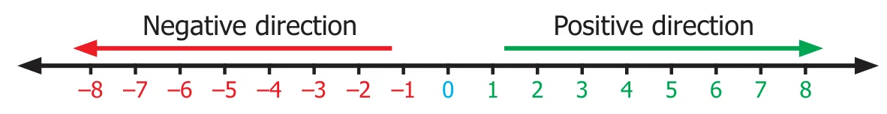
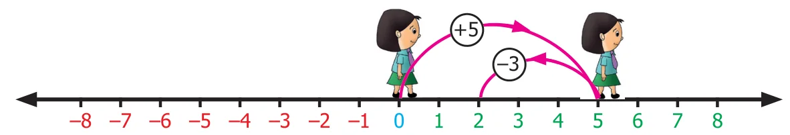
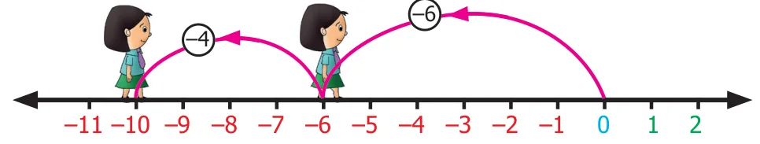
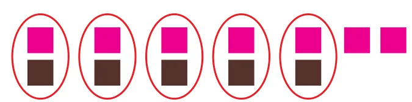
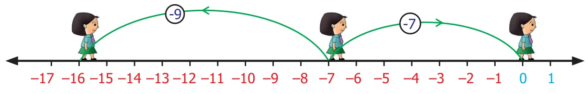
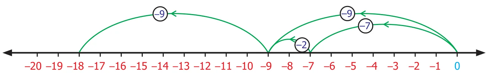
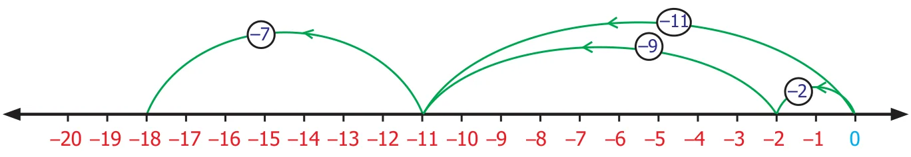
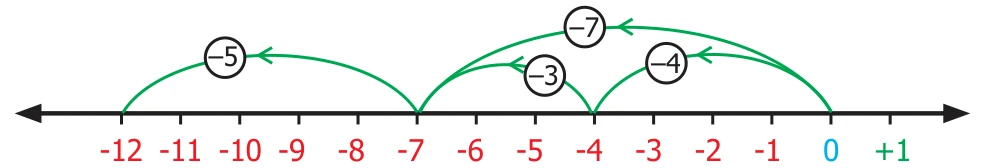
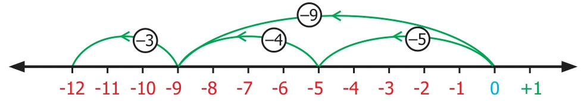

The number line is a simple tool to visualise addition of integers. Let us do an activity with the number line.
Activity
Imagine that the number line is a road with markers on it. We are allowed to step forward or backward on this road. One step taken is equal to one unit of number. Initially we start at zero and face positive direction. We step forward for positive integers and backward for negative integers. We maintain the same positive direction for addition operation.

To add \((+5)\) and \((-3)\), We start at zero facing positive direction and move five steps forward to represent \((+5)\). Since the operation is addition we maintain the same direction and move three units backward to represent \((-3)\). We land at \(+2\). So, \((+5)+(-3)=2\). This is shown in Fig.1.5.

Proceeding in the same way let us try another example. Find the sum of \((-6)\) and \((-4)\). We start at zero facing positive direction continuing in the same direction and move 6 units backward to represent \((-6)\) and in the same direction move 4 units backward to represent \((-4)\). We land at \((-10)\).
Therefore, \((-6)+(-4)=-10\)

Try this
Find the value of the following using the number line activity:
(i) \((-4)+(+3)\) (ii) \((-4)+(-3)\) (iii) \((+4)+(-3)\)
Activity
There are two bowls with tokens of two different colours brown and pink. Let us denote one brown token by \((+1)\) and one pink token by \((-1)\). A pair of tokens, brown \((+1)\) and pink \((-1)\), will denote zero \([1+(-1)=0]\)
To add two integers, we pick the required number of tokens and form possible zero pairs. The remaining number of tokens left after pairing is the sum of the two integers.

\(\begin{array}{r} (-7) \\ (+5) \\ \hline -2 \end{array}\)
To add \((-7)\) and \((+5)\) we pick 7 pink tokens and 5 brown tokens. We form zero pairs from the tokens as above. We can form 5 zero pairs. Then we are left with 2 pink tokens. Hence, \((-7)+(+5)=-2\).
\((-3)\quad(+)\quad(-4)\quad=-7\)
To add \((-3)\) and \((-4)\) we pick 3 pink tokens first and 4 pink tokens later. The total number of tokens is 7 pink tokens. There are no zero pairs. So, the sum of \((-3)\) and \((-4)\) is \((-7)\). Teacher can give different integers and ask them to add using tokens.
Note
- When we add two integers of the same sign the sum will also be an integer of the same sign. When we add two integers of different sign, the sum will be the difference between the two integers and have the sign of the integer with greater value.
- The integer without sign represents positive integer.
Example 1.1
Add the following integers using number line (i) 10 and \(-15\) (ii) \(-7\) and \(-9\)
Solution Let us add the intergers using number line
(i) 10 and \(-15\)

On the number line we first start at zero facing positive direction and move 10 steps forward, reaching 10. Then we move 15 steps backward to represent \(-15\) and reach at \(-5\). Thus, we get \(10+(-15)=-5\).
(ii) \(-7\) and \(-9\)

On the number line we first start at zero facing positive direction and move 7 steps backward, reaching \(-7\). Then we move 9 steps backward to represent \(-9\) and reach at \(-16\). Thus, we get \((-7)+(-9)=-16\).
Example 1.2
Add (i) \((-40)\) and \((30)\) (ii) 60 and \((-50)\)
Solution
(i) \((-40)\) and \((30)\)
\(-40+30=-10\)
(ii) 60 and \((-50)\)
\(60+(-50)=60-50=10\)
Example 1.3
Add: (i) \((-70)\) and \((-12)\) (ii) 103 and 39.
Solution
(i) \((-70)+(-12)=-70-12=-82\)
(ii) \(103+39=142\)
Example 1.4
A submarine is at 32 feet below the sea level. Then it moves up 8 feet. Find the depth of the submarine now.
Solution A submarine is 32 feet below sea level.
Therefore, it is represented by \(-32\)
Next it moves up 8 feet.
Moves above is represented as \(+8\)
The depth of the submarine \(=-32+8=-24\)
Therefore, the submarine is located at 24 feet below the sea level.
Example 1.5
Sita saved ₹225 and she has spent ₹400 on credit basis for the purchase of stationery. Find her due amount.
Solution
The amount Sita has \(=\) ₹225
The amount spent for stationery on credit \(=\) ₹400
The due amount to be paid \(=225-400=-175\)
Therefore, Sita has to pay ₹175.
Example 1.6
From the ground floor a man went up six floors and came down six floors. In which floor is he now?
Solution
Starting point \(=\) Ground floor
Number of floors climbed up \(=+6\)
Number of floors climbed down \(=-6\)
Now the landing point \(=+6-6=0\) (ground floor)
1.2.1 Properties of Addition
The sum of two whole numbers is always a whole number. Does this property hold for the collection of integers also?

Complete the given table and check whether the sum of two integers is an integer or not?

We observe that in all the above cases the sum of two integers is an integer. This property is known as "closure property" of integers on addition.
Therefore, for any two integers \(a,\ b;\ a+b\) is also an interger.
We observe one more property of integers. The order in which we add two integers does not matter. For example, \(12+(-13)\) is the same as \((-13)+(12)\). Also \((-7)+(-5)\) is the same as \((-5)+(-7)\).
This property is known as "commutative property" of integers.
Therefore, for any two integers \(a,\ b;\ a+b=b+a\).
What happens when we add three integers? For example, will \((-7)+(-2)+(-9)\) give the same value when they are added in any way of grouping.
Let us check by grouping the integers as \([(-7)+(-2)]+(-9)\) and \((-7)+[(-2)+(-9)]\). First let us find the value of \([(-7)+(-2)]+(-9)\).
\([(-7)+(-2)]+(-9)=(-9)+(-9)=-9-9=-18\)
Let us illustrate this with the number line : \([(-7)+(-2)]+(-9)\) can be represented as

\([(-7)+(-2)]+(-9)=-18\)
Then we will find the value of \((-7)+[(-2)+(-9)]\)
\((-7)+[(-2)+(-9)]=(-7)+(-11)=-7-11=-18\)
\((-7)+[(-2)+(-9)]\) can be represented on the number line as below.

\((-7)+[(-2)+(-9)]=(-18)\)
We reach the same number \(-18\) in both the cases. Hence, regrouping of integers does not change the value of the sum. This property is known as "associative property" under addition.
Therefore, for any three integers \(a,\ b,\ c;\ a+(b+c)=(a+b)+c\)
The collection of integers has positive, negative integers and zero. Have you noticed that zero is neither positive nor negative integer. What happens when we add zero to an integer?
For example, we observe that \(7+0=7,\ -3+0=-3,\ -27+0=-27,\ -79+0=-79,\ 0+(-69)=-69,\ 0+(-85)=-85\).
From the above it is clear that whenever zero is added to an integer, we get the same integer. Due to this property, zero is called the identity with respect to addition or "additive identity" of the collection of integers.
Therefore, for any integers \(a,\ a+0=a=0+a\)
The additive identity zero separates the number line into positive and negative integers. We have \(+1\) and \(-1\), \(+5\) and \(-5\), \(-15\) and \(+15\), etc. on opposite sides of the number line that are equidistant from zero. Such integers on either side of zero are called "opposites" of each other. In fact, we find that the "opposites" added together always give the value zero.
For example, \((-15)+15=0,\ 21+(-21)=0\). This property of integers is named as "additive inverse". \((-15)\) is the additive inverse of 15 because their sum is zero. In the same way, 21 is the additive inverse of \(-21\). Either of the pair of opposites is known as the "additive inverse" of the other.
Therefore, for any integer \(a,\ -a\) is the additive inverse.
\(a+(-a)=0=(-a)+a\)
Try these
- Fill in the blanks:
(i) \(20+(-11)=\underline{\qquad}+20\) (ii) \((-5)+(-8)=(-8)+\underline{\qquad}\) (iii) \((-3)+12=\underline{\qquad}+(-3)\) - Say true or false.
(i) \((-11)+(-8)=(-8)+(-11)\) (ii) \(-7+2=2+(-7)\) (iii) \((-33)+8=8+(-33)\) - Verify the following:
(i) \([(-2)+(-9)]+6=(-2)+[(-9)+6]\) (ii) \([7+(-8)]+(-5)=7+[(-8)+(-5)]\)
(iii) \([(-11)+5]+(-14)=(-11)+[5+(-14)]\)
(iv) \((-5)+[(-32)+(-2)]=[(-5)+(-32)]+(-2)\) - Find the missing integers:
(i) \(0+(-95)=\underline{\qquad}\) (ii) \(-611+\underline{\qquad}=-611\)
(iii) \(\underline{\qquad}+0=\underline{\qquad}\) (iv) \(0+(-140)=\underline{\qquad}\) - Complete the following:
(i) \(-603+603=\underline{\qquad}\) (ii) \(9847+(-9847)=\underline{\qquad}\) (iii) \(1652+\underline{\qquad}=0\)
(iv) \(-777+\underline{\qquad}=0\) (v) \(\underline{\qquad}+5281=0\)
Example 1.7
(i) Are \(120+51\) and \(51+120\) equal?
(ii) Are \((-5)+[(-4)+(-3)]\) and \([(-5)+(-4)]+(-3)\) equal?
Solution
(i) When we add, \(120+51=171\) ; \(51+120=171\)
In both the cases we get same answer. This means that integers can be added in any order. Hence, addition of integers is commutative.
(ii) \((-5)+[(-4)+(-3)]\) and \([(-5)+(-4)]+(-3)\)
In \((-5)+[(-4)+(-3)]\), \((-4)\) and \((-3)\) are added first and their result is then added with \((-5)\).

\((-5)+[(-4)+(-3)]=-12\)
Whereas in \([(-5)+(-4)]+(-3)\), \((-4)\) and \((-3)\) are added first and then the result is added with \((-5)\)

\([(-5)+(-4)]+(-3)=-12\)
In both the cases, we get \(-12\)
That is \((-5)+[(-4)+(-3)]=[(-5)+(-4)]+(-3)\)
So, addition is associative.
Example 1.8
Find the missing integers (i) \(0+(-2345)=\underline{\qquad}\) (ii) \(23479+\underline{\qquad}=0\)
Solution
(i) \(0+(-2345)=-2345\)
(ii) \(23479+(-23479)=0\)
Therefore, additive inverse of 23479 is \(-23479\)
Example 1.9
Mention the property for the following equations:
(i) \((-45)+(-12)=-57\) (ii) \((-15)+7=(7)+(-15)\)
(iii) \(-10+3=-7\) (iv) \((-7)+(-5)=(-5)+(-7)\)
(v) \((-7)+[(-4)+(-3)]=[(-7)+(-4)]+(-3)\) (vi) \(0+(-7245)=-7245\)
Solution
(i) Closure Property (ii) Commutative Property
(iii) Closure Property (iv) Commutative Property
(v) Associative Property (vi) Additive Identity